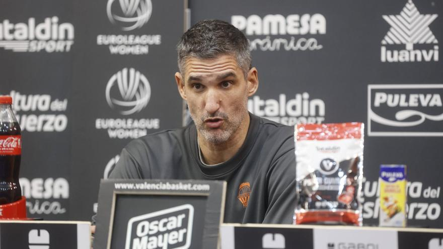
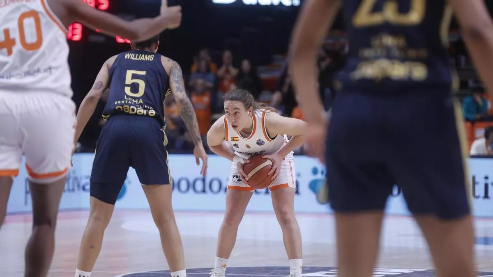

Rubén Burgos: "Queremos dar nuestra mejor versión contra un rival que seguro viene con hambre"
Rueda de prensa del entrenador del Valencia Basket femenino Ruben Burgos. / GERMÁN CABALLERO
Desde el partido de Gran Canaria veníamos en mente con una planificación muy ajustada en este bloque exigente de partidos...
Leer más
Valencia Basket suma una nueva victoria en Euroliga
Gran actuación del equipo en su último partido.
El equipo dirigido por Álex Mumbrú logró imponerse en un partido muy disputado en la Euroliga...
Leer más

El Valencia Basket se prepara para su próximo desafío
Declaraciones previas al siguiente encuentro del equipo.
Las jugadoras continúan con su preparación de cara al siguiente encuentro, enfocados en mejorar su rendimiento...
Leer más